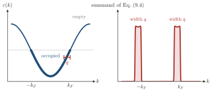

Advanced Quantum Materials 2027 · All lectures · Lecture notes
Session 9. Excitations and Defects in Quantum Materials
9.4a The Fermi sea and the Lindhard function
To make (9.3) concrete, let us take the case that we will use for most of this session, which is a non-interacting electronic Hamiltonian in diagonal form, \(H_0 = \sum_k \varepsilon(k)\, c_k^\dagger c_k\). Its many-body ground state is the Fermi sea, where every single-particle state with \(\varepsilon(k)\) below the Fermi energy is filled and every state above it is empty. In the same way, \(\langle c_k^\dagger c_k\rangle = n_F(\varepsilon(k))\), which is equal to \(1\) for occupied states and \(0\) for unoccupied states at \(T=0\), and more generally is the Fermi-Dirac function. The set of \(k\)-points that are exactly at the Fermi energy defines the Fermi surface. This surface will be the most important geometric object in everything that follows, because a small perturbation can only change the states that are close to it. To move an electron from deep inside the Fermi sea to far above it costs too much energy to be relevant at first order.
Now we use (9.3) with a specific perturbation that has a clear physical meaning, which is a local shift of the onsite energy. This is a local change of the chemical potential at one point of the material. The observable that we follow is the change in the local electronic density, \(n(x) - n_0(x)\). We use translational symmetry, we Fourier transform to \(q\)-space, and we insert the perturbed wavefunctions (9.3) into the density operator. After some algebra, where each term comes from a matrix element \(\langle k+q|V|k\rangle\) divided by the energy denominator \(\varepsilon(k+q)-\varepsilon(k)\), with the same structure as (9.3), we obtain the static Lindhard function,
\[\chi_0(q) = \frac{1}{N} \sum_k \frac{n_F(\varepsilon(k)) - n_F(\varepsilon(k+q))}{\varepsilon(k+q) - \varepsilon(k)}. \tag{9.4}\]
Let us first check (9.4). As \(q\to 0\), we expand both the numerator and the denominator to first order in \(q\) and we obtain \(\chi_0(q\to 0) \to -\sum_k n_F'(\varepsilon(k))/N\). At \(T=0\) this is exactly \(D(E_F)\), the density of states per site at the Fermi level, which is a positive and finite number, as expected. Equation (9.4) is different from zero only when \(k\) is occupied and \(k+q\) is unoccupied, or the opposite. If both are occupied or both are empty, the numerator vanishes. So the response is built only from states on the two sides of the Fermi surface, as the general argument above predicted.

For small \(q\) the two windows of the figure have width \(q\), and the denominator of (9.4) is roughly \(v_F q\). What is \(\chi_0(q\to0)\) for the chain?
Show the answers
- A. ✓ True
This is true. The number of states in the windows and the denominator \(v_Fq\) are both proportional to \(q\). They cancel, and what remains is \(1/(\pi v_F)\) for the spinless chain, which is \(D(E_F)\).
- B. ✗ False
This is false. The windows shrink, but the denominator shrinks in the same way. A free chain has a finite Pauli-like response \(D(E_F)>0\) at \(q\to0\), so the ratio does not vanish.
- C. ✗ False
This is false. A divergence of \(\chi_0(q\to0)\) would mean an infinite compressibility. A free electron gas has the finite value \(D(E_F)\), because the number of states in the window decreases together with the denominator.
In the next part we will see where this function diverges, which is the nesting condition.